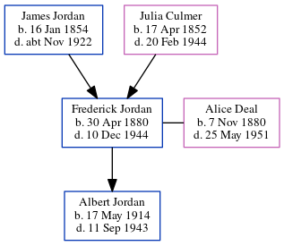

Eileen Barbara Goodhew (née Adams) cMay 1928 - 2014
[ Home ] | [ Calendar ] | [ Surnames Index ] | [ Errors ] | [ Family History ]Eileen Adams, the wife of Reginald Norman Goodhew (the third cousin once-removed on the mother's side of Nigel Horne), was born in Godstone, Surrey, England c. May 19281. She married Reginald (an aircraft fitter with whom she had 2 surviving children Paul N and Geraldene A) in Surrey, England around Aug 19453.
She died on 17 Dec 2014 in Horley, Surrey, England2.
Citations
- England & Wales births 1837-2006 - Findmypast
- England & Wales Deaths 2007-2021 - Findmypast
- England & Wales Marriages 1837-2005 - Findmypast
Media
England & Wales marriages 1837-2005 - BMD/M/1945/3/AZ/000007/108
England & Wales births 1837-2006 - BMD/B/1928/2/AZ/000006/082
England & Wales Deaths 2007-2021 - BMD/D/MILLEN/000710775
Family Tree
Map
Generated by ged2site. Last updated on Jul 3, 2024
Known Issues
1939 UK register information missing